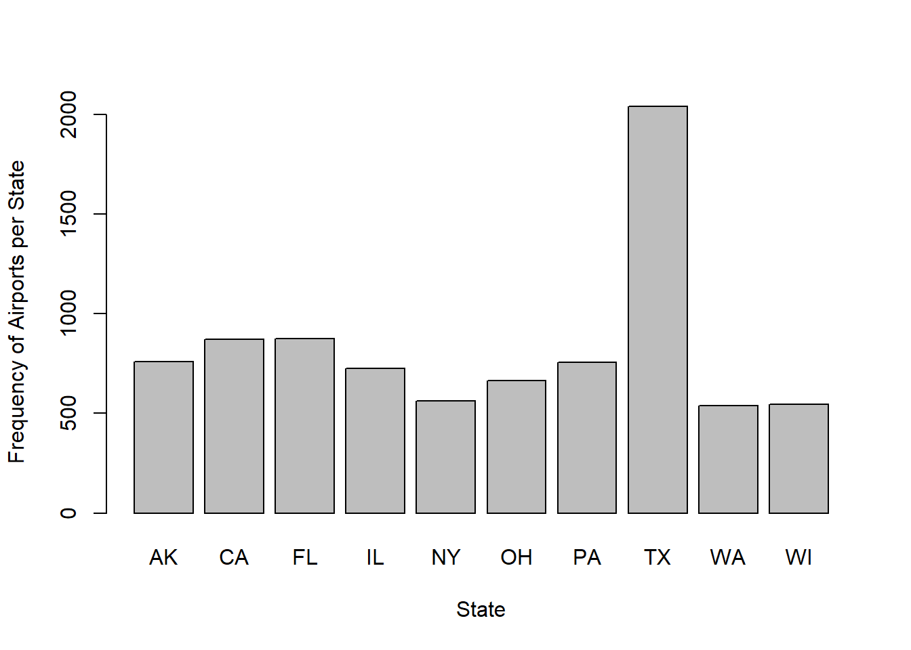
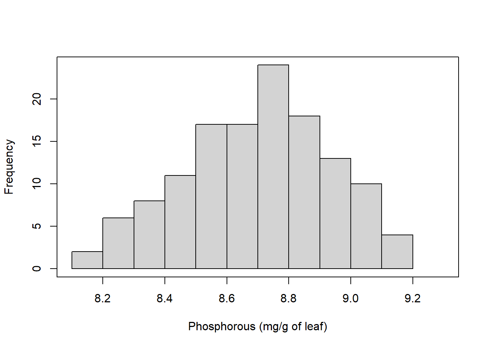
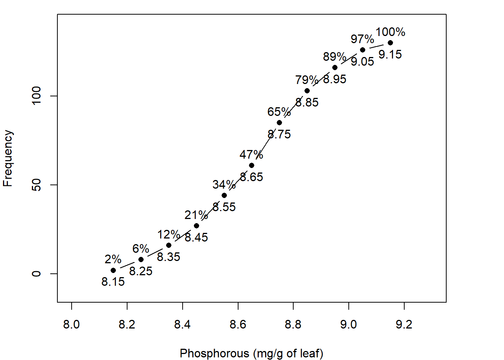
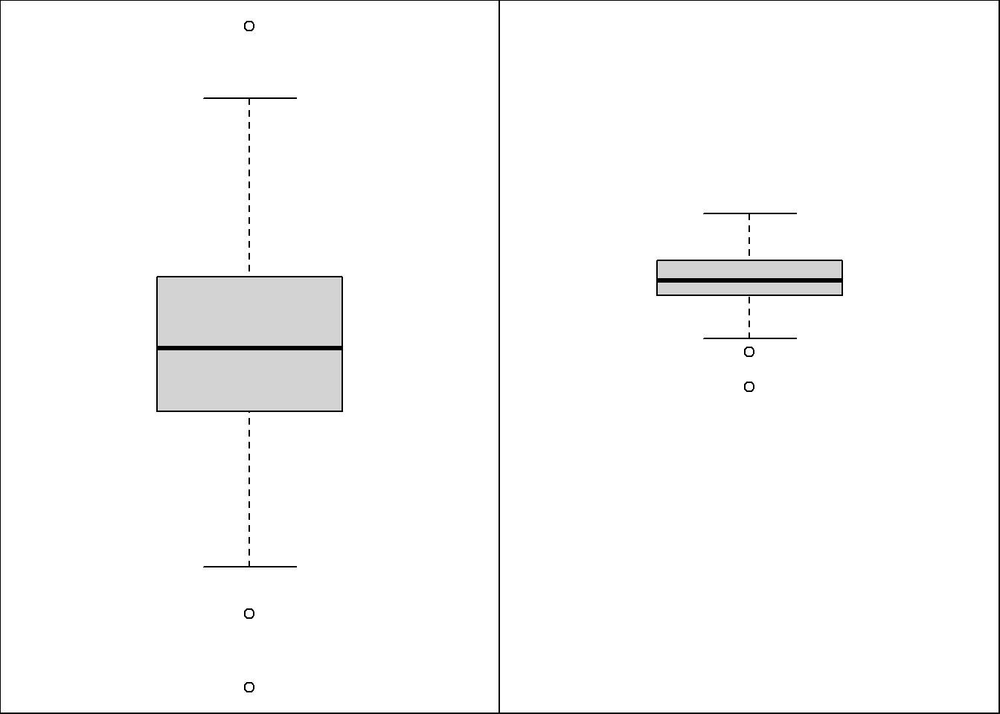
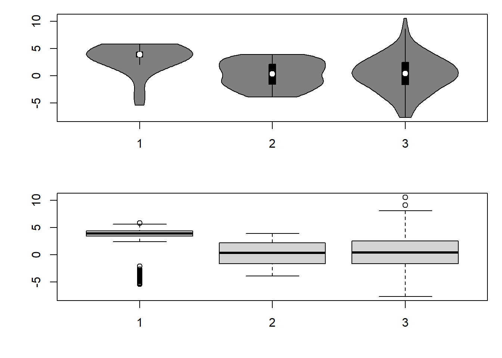

2 Univariate Data
Univariate is a describes a type of data which consists of observations of only a single characteristic.
2.1 Variables and Frequency Distributions
Zar 4th ed. (1.1, 1.3, 1.4)
The properties and characteristics of an object that can assume two or more different values are called variables.
These are the values that comprise our data.
Examples:
- Heights of graduate students
- Foot size of toddlers at 10 days old
- Taxomonic diversity (number of species) in a habitat
We need to understand the characteristics of variables prior to analysis because different types of measurements will require different methods of analysis.
The next step after data collection is to organize the data into a meaningful form so that similarities and contrasts can be seen easily.
One of the common methods for organizing univariate data is to construct frequency distributions either in a table or as a figure.
The frequency distribution is an organized representation of the number of observations in each category on the scale of measurement. These allow researchers to have a glance at the entire data conveniently.
Frequency distributions allow the experimenter to understand if there are observations that are high or low and also whether observations are concentrated in one area or spread out across the entire scale.
2.2 Categorical Variable Types
2.2.1 Binary variables
There are only two categories, e.g.
dead or alive,
present or absent,
positive or negative (e.g. for a disease),
the value of some quantity of interest is zero or positive,
or the value of some quantity of interest exceeds some threshold value.
2.2.2 Nominal variables
There are more than two categories, e.g.
Whether the subject is an omnivore, vegetarian, vegan, or carnivore.
The subject’s taxonomic group (e.g. genera, species, phyla),
2.2.3 Ordinal variable
Similar to a nominal variable but the categories are ordered.
Whether people got a fail, a pass, a merit or a distinction in their exam.
Intensity of infection (e.g. none, mild, moderate, severe)
2.2.4 R Code
## Provide code in R (using base R functionality) to create a data frame with three colums,
## composed of binary variables, nominal variables, and ordinal variables (e.g. “low
## income”,”middle income”,”high income”). One for each column in a data frame.## ```
## # Create binary variable
## # A binary variable is created and stored as a vector with values 1 and 0
## binary_var <- c(1, 0, 0, 1, 1)
##
## # Create nominal variable
## # A nominal variable is created and stored as a factor with three levels 'low income', 'middle income', and 'high income'
## nominal_var <- factor(c('low income', 'middle income', 'middle income', 'high income', 'low income'), levels = c('low income', 'middle income', 'high income'))
##
## # Create ordinal variable
## # An ordinal variable is created and stored as an ordered factor with three levels 'Low', 'Medium', and 'High'
## ordinal_var <- ordered(c('Low', 'Medium', 'Low', 'High', 'Medium'), levels = c('Low', 'Medium', 'High'))
##
## # Create data frame
## # A data frame is created by combining the binary, nominal, and ordinal variables using the 'data.frame()' function
## df <- data.frame(binary_var, nominal_var, ordinal_var)
##
## # View the data frame
## # The contents of the data frame are displayed in the console by calling the variable name 'df'
## df
## ```2.2.5 Frequency Distributions of a Categorical Variable
- A tally of how frequently occurring a value is among categories.

2.2.6 R Code
## Provide code in R (using base R functionality) to plot ordinal, binary, and nominal
## variables using a barplot## ```R
## # create example data
## ordinal_var <- c(3, 2, 4, 1, 5) # create a vector of values for an ordinal variable
## binary_var <- c(TRUE, FALSE, TRUE, TRUE, FALSE) # create a vector of values for a binary variable
## nominal_var <- c('Red', 'Green', 'Blue', 'Green', 'Red') # create a vector of values for a nominal variable
##
## # create barplot for ordinal variable
## barplot(ordinal_var, names.arg = c('Item 1', 'Item 2', 'Item 3', 'Item 4', 'Item 5'), # create a barplot of the ordinal variable with names for each bar
## main = 'Ordinal Variable', xlab = 'Item', ylab = 'Value') # add a title and axis labels to the plot
##
## # create barplot for binary variable
## binary_table <- table(binary_var) # create a frequency table of the binary variable
## barplot(binary_table, names.arg = c('FALSE', 'TRUE'), # create a barplot of the frequency table with names for each bar
## main = 'Binary Variable', xlab = 'Item', ylab = 'Count')```R
## # create barplot for nominal variable
## nominal_table <- table(nominal_var) # create a frequency table of the nominal variable
## barplot(nominal_table, main = 'Nominal Variable', xlab = 'Item', ylab = 'Count') # create a barplot of the frequency table and set a title and axis labels
## ```
##
## Overall, this R code creates three barplots to display different types of variables - ordinal, binary, and nominal. The `barplot` function is used to create each barplot, with customization options such as `names.arg`, `main`, `xlab`, and `ylab` used as needed. The `table` function is used to create frequency tables of the binary and nominal variables to feed into the `barplot` function.2.3 Continuous Variables
Equal intervals on the variable represent equal differences in the property being measured, e.g.
the difference between 6 and 8 is equivalent to the difference between 13 and 15,
Density or frequency of organisms in a transect or at a sampling station,
Body Mass Index or some measure of condition of an organism.
2.3.1 Frequency Distribution of a Continuous Variable
A question often asked: What interval to choose?
Your knowledge of the domain will guide this. As a first approach, the width of the class can be determined by dividing the range of observations by the number of classes.
The following are some guidelines regarding class widths:
1.) It is advisable to have equal class widths. Unequal class widths should be used only when large gaps exist in data.
2.) The class intervals should be mutually exclusive and nonoverlapping.
3.) Open-ended classes at the lower and upper side (e.g., < 10, > 100) should be avoided, why?
Determination of the Amount of Phosphorous in Leaves: A Frequency Table of Continuous Data
| Phosphorous concentration | Frequency |
|---|---|
| 8.1 to 8.2 | 2 |
| 8.2 to 8.3 | 6 |
| 8.3 to 8.4 | 8 |
| 8.4 to 8.5 | 11 |
| 8.5 to 8.6 | 17 |
| 8.6 to 8.7 | 17 |
| 8.7 to 8.8 | 24 |
| 8.8 to 8.9 | 18 |
| 8.9 to 9.0 | 13 |
| 9.0 to 9.1 | 10 |
| 9.1 to 9.2 | 4 |

2.3.2 Cumulative Distribution of a Continuous Variable

Determination of the Amount of Phosphorous in Leaves: A Frequency Table of Continuous Data
| Cumulative Frequency | |||
|---|---|---|---|
| Phosphorous concentration | Frequency | Starting with Low Values | Starting with High Values |
| 8.15 to 8.25 | 2 | 2 | 130 |
| 8.25 to 8.35 | 6 | 8 | 128 |
| 8.35 to 8.45 | 8 | 16 | 122 |
| 8.45 to 8.55 | 11 | 27 | 114 |
| 8.55 to 8.65 | 17 | 44 | 103 |
| 8.65 to 8.75 | 17 | 61 | 86 |
| 8.75 to 8.85 | 24 | 85 | 69 |
| 8.85 to 8.95 | 18 | 103 | 45 |
| 8.95 to 9.05 | 13 | 116 | 27 |
| 9.05 to 9.15 | 10 | 126 | 14 |
| 9.15 to 9.25 | 4 | 130 | 4 |
Total frequency = 130 = n
2.3.3 R Code
## Provide code in R (using base R functionality) to plot a frequency histogram using
## simulated data from a continuous distribution.## ```
## # Set seed for reproducibility
## set.seed(123)
##
## # Generate simulated data from a normal distribution
## data <- rnorm(1000, mean = 10, sd = 2)
##
## # Plot frequency histogram
## hist(data, freq = TRUE, breaks = 20, xlim = c(0, 20),
## main = 'Frequency Histogram of Simulated Data', # Add main title to plot
## xlab = 'Data Values', ylab = 'Frequency') # Add axis labels to plot
## ```
## In this example, we set the seed to ensure the same results every time the code is run. We then simulate 1000 data points from a normal distribution with a mean of 10 and standard deviation of 2. Finally, we use the `hist()` function with the `freq = TRUE` argument to plot a frequency histogram with 20 breaks and set the x-axis limits to 0 and 20. The main title and axis labels are also added for clarity.2.3.4 Box and Whisker Plot of a Continuous Variable
This graph, first described by Tukey, can also be used to illustrate the distribution of data.
There is a vertical or horizontal rectangle (box), the ends of which correspond to the upper and lower quartiles (75th and 25th percentile, respectively).
Hence the middle 50% of observations are represented by the box.
The length of the box indicates the variability of the data. The line inside the box denotes the median (sometimes marked as a plus sign).
The position of the median indicates whether the data are skewed or not. If the median is closer to the upper quartile, then they are negatively skewed and if it is near the lower quartile, then positively skewed.

2.3.5 R Code
## Provide code in R (using base R functionality) to create a Box and Whisker Plot of a
## Continuous Variable.## ```R
## # Create a continuous variable data
## continuous_var <- rnorm(100) # Create a variable "continuous_var" that stores 100 random normal numbers generated by rnorm
##
## # Create a boxplot of the continuous variable
## boxplot(continuous_var, main='Boxplot of Continuous Variable', # Create a box and whisker plot of the continuous variable, with a main title of 'Boxplot of Continuous Variable'
## ylab='Value', col='steelblue') # Set the y-axis label to 'Value' and the color of the boxes to 'steelblue'
## ```2.3.6 Violin Plots
Violin plots are an alternative to box plots that solves the issues regarding displaying the underlying distribution of the observations, as these plots show a kernel density estimate of the data.
same summary statistics as box plots:
the white dot represents the median.
the thick gray bar in the center represents the interquartile range.
the thin gray line represents the rest of the distribution, except for points that are determined to be “outliers” using a method that is a function of the interquartile range.
On each side of the gray line is a kernel density estimation to show the distribution shape of the data. Wider sections of the violin plot represent a higher probability that members of the population will take on the given value; the skinnier sections represent a lower probability.

2.3.7 R Code
## Provide code in R (using base R functionality) to create a violin plot in R plotting using
## the mtcars dataset using package vioplot.## ```
## # Load the vioplot package and the mtcars dataset
## library(vioplot)
## data(mtcars)
##
## # Create a violin plot of the mpg variable
## vioplot(mtcars$mpg, main = 'Violin Plot of MPG in mtcars', ylab = 'MPG')
## ```
## The above code first loads the `vioplot` package and the `mtcars` dataset. Then, it creates a violin plot of the `mpg` variable using the `vioplot()` function. The `main` argument adds a title to the plot and the `ylab` argument labels the y-axis as 'MPG'.